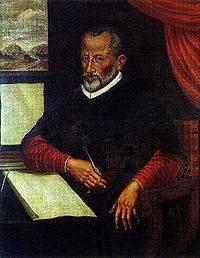

帕勒斯特里那（Giovani Pierluigi da Palestrina，约1525—1594）
在16世纪德国、英国、法国等国家地区对宗教的冲击下，基督教和天主教皇不得不对自身的一些弊端进行相应的改革措施。经过三次宗教会议后，针对宗教音乐总结出如下问题：
第一，复调音乐使歌词难以听清，淡化了宗教的内涵；
第二，宗教音乐中的世俗音乐过多；
第三，在宗教音乐使用乐器是不合适的；
第四，音乐家们对宗教的态度不端正。
针对这几个问题，天主教决定：
第一，音乐的定旋律不再滥用世俗音乐；
第二，歌词必须让人听清；
这一段改革的时期，被历史称为“对应宗教改革时期”。意大利作曲家帕勒斯特里那（Giovani Pierluigi da Palestrina，约1525—1594）是“对应宗教改革时期”的代表作曲家。
帕勒斯特里那一生的大部分时间都是在罗马度过的，小时候在唱诗班长大了到教堂当管风琴师，后来又到罗马不同的几个大教堂当过指挥，曾负责修订圣咏歌本的相关工作。 所以，组织一致决定他作为“对应宗教改革时期”的代表，来落实对音乐的改革。
帕勒斯特里那一生创作的作品有500多首，400多首是宗教音乐，他的作品在技法和风格都十分规范，而且充满了他对宗教的信仰，这就使得他的音乐在代表了宗教音乐风格的同时， 也代表了文艺复兴时期音乐创作的高超水准。我们听一下他的《马彩鲁斯教皇弥撒曲》中的 》片段，来感受一下“对应宗教改革”的音乐风
原文来自知乎用户：胡大水